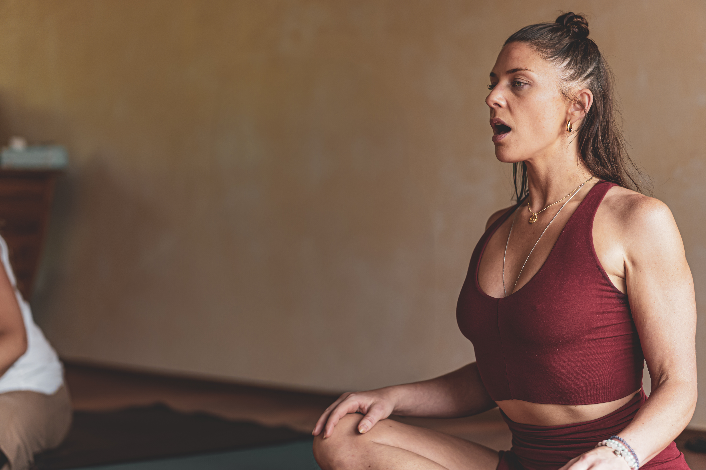
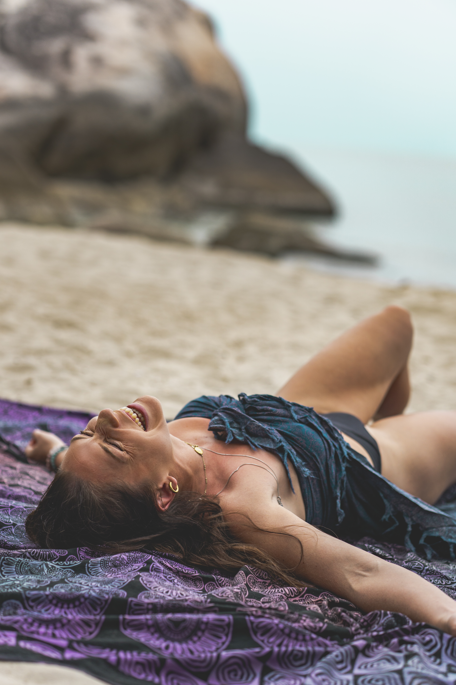
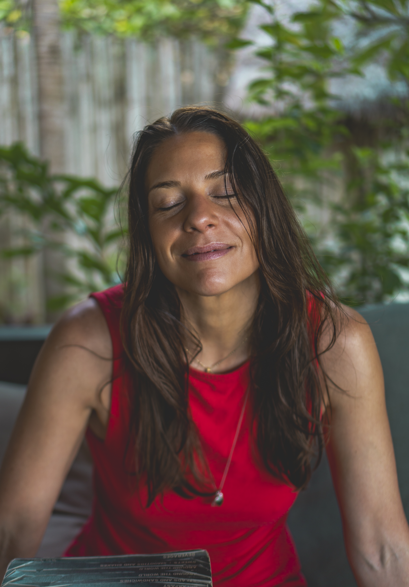
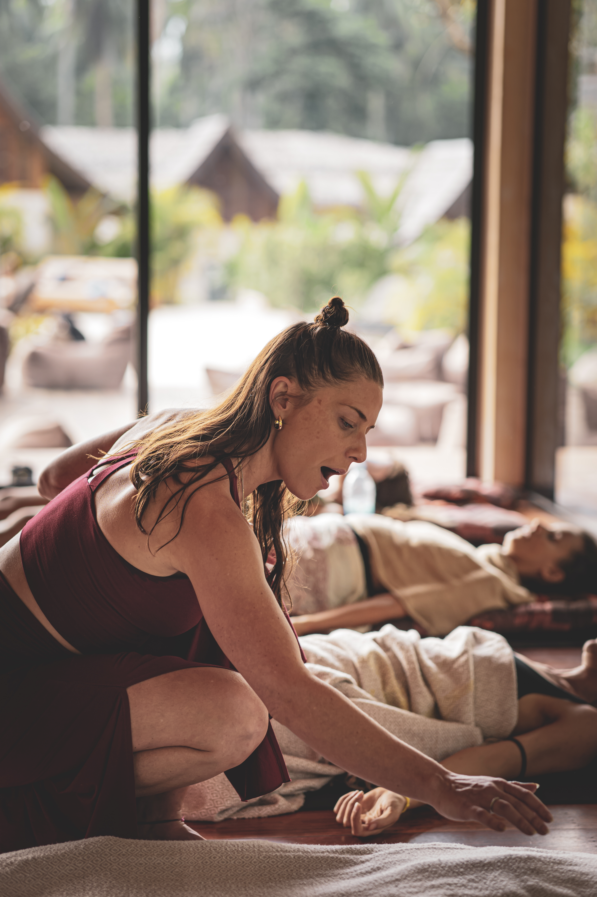
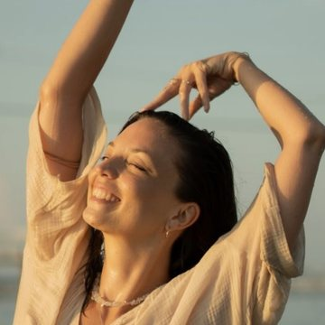
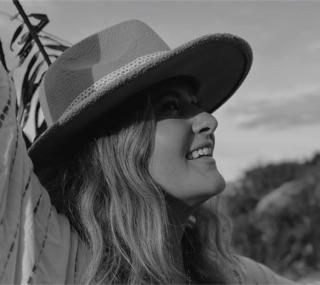
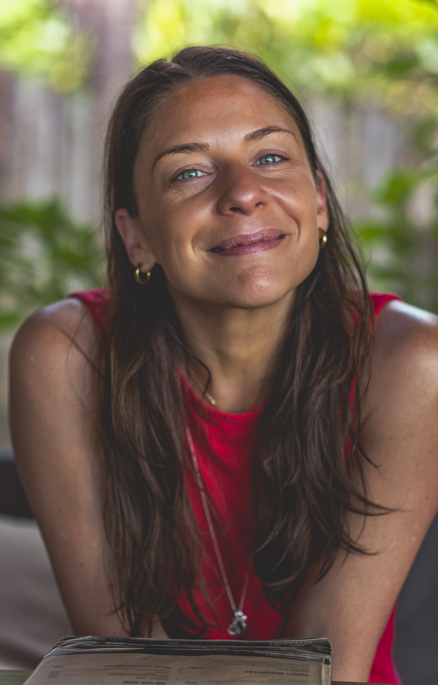

Conscious connected breathwork, held in a safe, supportive, trauma-informed container. No previous experience needed — just a willingness to show up and breathe.
Message Bec on WhatsAppThank you for your interest in working together. This page holds everything you need before we begin — so you can arrive informed, prepared, and at ease.
Rebirthing breathwork is a gentle yet profound conscious connected breathing practice. Through the breath, we create the conditions for the body and nervous system to release deeply held tension, emotion, and old patterns — often ones that words alone can’t reach.
Sessions are held in a safe, supportive container with a trauma-informed approach. You don’t need any previous experience — just a willingness to show up and breathe.

I bring a grounded, trauma-informed approach to this work, with experience supporting clients through deep healing — from those navigating trauma and nervous system dysregulation, to professional athletes using the breath as a tool for performance and recovery.
What makes my approach a little different is the container I create. Every session is deeply personal — shaped around you, your history, and where you are right now. I work slowly and gently, always led by what your body is ready for. No pushing, no performing, no pressure to have a particular experience.

Creating that environment of trust isn’t something I add to the work. It is the work.Bec · Becoming Breath

Each session is tailored to you. Emotions, physical sensations, or unexpected insights may surface — a normal and healthy part of the process. You will always be supported throughout.
A conversation to understand where you are right now, and to gently set an intention for our time together.
The main practice — a guided, conscious connected breath, held at the pace your body is ready for.
Time to rest, integrate, and debrief afterwards — letting the experience settle before you leave.
Session length — 1 to 2 hours. Your initial session is typically closer to 2 hours.
“From the very first moment, I felt completely safe — safe enough to fully let go and soften.”

Lisa“Bec created such a safe, supportive space — her calm, grounded presence made it easy to relax and trust the process. I felt genuinely cared for, during the session and long after.”Amy
“It was a big session, and a real moment of healing and understanding. I came away with new clarity and a deeper sense of freedom.”

Fern“I have never felt so beaten up and so light at the same time. The one thing that held me was the breathing itself — I hid inside its rhythm, and it kept me safe.”Ömer
“This was so much more than a breathwork session — it was a journey back to myself. I left feeling lighter, more open, and full of gratitude.”Lisa
“In just a few hours you touched my life the way only a very few people ever have. What I know now is this: when I go home, I want to hold the ones I love, while I still can.”Ömer
We can work together in whichever setting feels right for you.
A calm, private environment set up especially for this work.
I come to you, in a space where you already feel comfortable.
A travel fee may applyVia video call — you’ll need a quiet, private space where you can lie down comfortably.
Approximate conversions — sessions are charged in Thai Baht (THB).
A note on integration calls. I highly recommend booking one in the days following your breathwork session — a space to process what came up, make meaning of your experience, and support lasting change. An optional add-on to any session.
Accepted in cash (Thai Baht) or by bank transfer via Wise. Details are shared directly, and payment is due at the time of your session.
Before your first session I’ll send two short forms to complete:
These forms — and everything shared in session — are kept strictly confidential. They exist only to support your safety and wellbeing.
Please give as much notice as possible if you need to reschedule. We can discuss the cancellation policy during our initial call.

Please don’t hesitate to reach out with any questions before our session. The easiest way to reach me is a message on WhatsApp — we’ll find a time that feels right for you.
Message Bec on WhatsApp